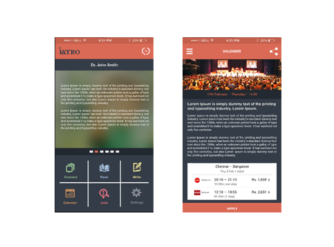
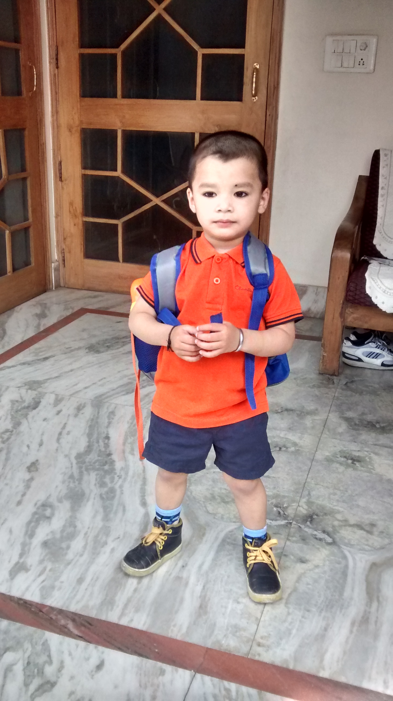
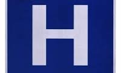

This is my site...
1 bower install jquery This will install jQuery to Bower's install directory, the default being bower_components. Within bower_components/jquery/dist/ you will find an uncompressed release, a compressed release, and a map file. The jQuery Bower package contains additional files besides the default distribution. In most cases you can ignore these files, however if you wish to download the default release on its own you can use Bower to install jQuery from one of the above urls instead of the registered package. For example, if you wish to install just the compressed jQuery file, you can install just that file with the following command:Welcome to my website
Prashantsharma is computer gradute
If you are searching for an exemplary HTML template that can improve your websites, look no further than Canvas. This product can be used for multi-page or single-page sites, depending on the client’s specifications. It is also very versatile, suited for a broad spectrum of possible business fields: media agency, web app, restaurant, travel, wedding, construction or medical. With Canvas, there is no limit to what you can achieve. More than 75 fully-functional home page variations are offered, in addition to 550 HTML files. Basically, a template must be a blank slate for the owner’s creativity. Canvas allows you to create a site that perfectly reflects your professionalism and commitment towards health. There are working Ajax contact forms, and Less CSS files. Your website will benefit from 165 creative templates for your portfolio, and more than 50 scalable shortcodes. Despite its regular $14 price tag, the premium Revolution Slider plugin was added free of charge. To increase site revenue, it is possible to open a personal online store. Canvas has some gorgeous ecommerce shop templates that can facilitate the distribution of merchandise. There will be a limitless number of footer layout variations, and more than 7 sliders with 20 uby Hall Clinic had a humble beginning when the founder chairman Dr. K.B. Grant, an eminent cardiologist himself, started a small nursing home in 1959 in the bungalow Ruby Hall, owned by General David Sassoon at the present location of the hospital with just two beds. In 1966 it was converted from a private institution to a public charitable trust In 1966 it was converted from a private institution to a public charitable trustIn 1966 it was converted from a private institution to a public charitable trust– Poona Medical... uby Hall Clinic had a humble beginning when the founder chairman Dr. K.B. Grant, an eminent cardiologist himself, started a small nursing home in 1959 in the bungalow Ruby Hall, owned by General David Sassoon at the present location of the hospital with just two beds. In 1966 it was converted from a private institution to a public charitable trust In 1966 it was converted from a private institution to a public charitable trustIn 1966 it was converted from a private institution to a public charitable trust– Poona Medical...ebsites, look no further than Canvas. This product can be used for multi-page or single-page sites, depending on the client’s specifications. It is also very versatile, suited for a broad spectrum of possible business fields: media agency, web app, restaurant, travel, wedding, construction or medical. With Canvas, there is no limit to what you can achieve. More than 75 fully-functional home page variations are offered, in addition to 550 HTML files. Basically, a template must be a blank slate for the owner’s creativity. Canvas allows you to create a site that perfectly reflects your professionalism and commitment towards health. There are working Ajax contact forms, and Less CSS files. Your website will benefit from 165 creative templates for your portfolio, and more than 50 scalable shortcodes. Despite its regular $14 price tag, the premium Revolution Slider plugin was added free of charge. To increase site revenue, it is possible to open a personal online store. Canvas has some gorgeous ecommerce shop templates that can facilitate the distribution of merchandise. There will be a limitless number of footer layout variations, and more than 7 sliders with 20 uby Hall Clinic had a humble beginning when the founder chairman Dr. K.B. Grant, an eminent cardiologist himself, started a small nursing home in 1959 in the bungalow Ruby Hall, owned by General David Sassoon at the present location of the hospital with just two beds. In 1966 it was converted from a private institution to a public charitable trust In 1966 it was converted from a private institution to a public charitable trustIn 1966 it was converted from a private institution to a public charitable trust– Poona Medical... uby Hall Clinic had a humble beginning when the founder chairman Dr. K.B. Grant, an eminent cardiologist himself, started a small nursing home in 1959 in the bungalow Ruby Hall, owned by General David Sassoon at the present location of the hospital with just two beds. In 1966 it was converted from a private institution to a public charitable trust In 1966 it was converted from a private institution to a public charitable trustIn 1966 it was converted from a private institution to a public charitable trust– Poona Medical.I'm a paragraph. Click here to add your own text and edit me. It’s easy. Just click “Edit Text” or double click me and you can start adding your own content and make changes to the font. Feel free to drag and drop me anywhere you like on your page. I’m a great place for you to write more. Tell a story and let your users get to know you.by Hall Clinic had a humble beginning when the founder chairman Dr. K.B. Grant, an eminent cardiologist himself, started a small nursing home in 1959 in the bungalow Ruby Hall, owned by General David Sassoon at the present location of the hospital with just two beds. In 1966 it was converted from a private institution to a public charitable trust In 1966 it was converted from a private institution to a public charitable trustIn 1966 it was converted from a private institution to a public charitable trust– Poona Medical.I'm a paragraph. Click here to add your own text and edit me. It’s easy. Just click “Edit Text” or double click me and you can start adding your own content and make changes to the font. Feel free to drag and drop me anywhere you like on your page. I’m a great place for you to write more. Tell a story and let your users get to know you.beginning when the founder chairman Dr. K.B. Grant, an eminent cardiologist himself, started a small nursing home in 1959 in the bungalow Ruby Hall, owned by General David Sassoon at the present location of the hospital with just two beds. In 1966 it was converted from a private institution to a public charitable trust In 1966 it was converted from a private institution to a public charitable trustIn 1966 it was converted from a private institution to a public charitable trust– Poona Medical.I'm a paragraph. Click here to add your own text and edit me. It’s easy. Just click “Edit Text” or double click me and you can start adding your own content and make changes to the font. Feel free to drag and drop me
.jpg) Working with the generous panel of doctor whom we cant stop thanking since we have no other incentve to offer delivered iatoConnect MARCH 2015 Our humble begining With no practical savings and borrowings from friends fools and family registered our organisation after spending two weeks in persuit of name
Working with the generous panel of doctor whom we cant stop thanking since we have no other incentve to offer delivered iatoConnect MARCH 2015 Our humble begining With no practical savings and borrowings from friends fools and family registered our organisation after spending two weeks in persuit of name
.jpg) Working with the generous panel of doctor whom we cant stop thanking since we have no other incentve to offer delivered iatoConnect MARCH 2015 Our humble begining With no practical savings and borrowings from friends fools and family registered our organisation after spending two weeks in persuit of name
Working with the generous panel of doctor whom we cant stop thanking since we have no other incentve to offer delivered iatoConnect MARCH 2015 Our humble begining With no practical savings and borrowings from friends fools and family registered our organisation after spending two weeks in persuit of name
Working with the generous panel of doctor whom we cant stop thanking since we have no other incentve to offer delivered iatoConnect MARCH 2015 Our humble begining With no practical savings and borrowings from friends fools and family registered our organisation after spending two weeks in persuit of name
Working with the generous panel of doctor whom we cant stop thanking since we have no other incentve to offer delivered iatoConnect MARCH 2015 Our humble begining With no practical savings and borrowings from friends fools and family registered our organisation after spending two weeks in persuit of name
Working with the generous panel of doctor whom we cant stop thanking since we have no other incentve to offer delivered iatoConnect MARCH 2015 Our humble begining With no practical savings and borrowings from friends fools and family registered our organisation after spending two weeks in persuit of name
Birlamedisoft ClinicPlus, OPD Management Software is an advanced Windows based Clinic Management Software system for OPD clinics. Suitable for any Specialty doctor to configure the software for their needs.It enables physicians and clinic managers to efficiently manage their clinics' daily operational needs. Designed for a single-user or multiple users in a network environment, our comprehensive clinic software services equip clinics and medical centres with useful tools to implement a complete medical solution.
 Birlamedisoft ClinicPlus, OPD Management Software is an advanced Windows based Clinic Management Software system for OPD clinics. Suitable for any Specialty doctor to configure the software for their needs.It enables physicians and clinic managers to efficiently manage their clinics' daily operational needs. Designed for a single-user or multiple users in a network environment, our comprehensive clinic software services equip clinics and medical centres with useful tools to implement a complete medical solution.comprehensive clinicperational needs. Designed for a single-user or multiple users in a network environment, our comprehensive clinic software services equip clinics and medical centres with useful tools to implement a complete medical solution. environment, our comprehensive clinic
Birlamedisoft ClinicPlus, OPD Management Software is an advanced Windows based Clinic Management Software system for OPD clinics. Suitable for any Specialty doctor to configure the software for their needs.It enables physicians and clinic managers to efficiently manage their clinics' daily operational needs. Designed for a single-user or multiple users in a network environment, our comprehensive clinic software services equip clinics and medical centres with useful tools to implement a complete medical solution.comprehensive clinicperational needs. Designed for a single-user or multiple users in a network environment, our comprehensive clinic software services equip clinics and medical centres with useful tools to implement a complete medical solution. environment, our comprehensive clinic
Birlamedisoft ClinicPlus, OPD Management Software is an advanced Windows based Clinic Management Software system for OPD clinics. Suitable for any Specialty doctor to configure the software for their needs.It enables physicians and clinic managers to efficiently manage their clinics' daily operational needs. Designed for a single-user or multiple users in a network environment, our comprehensive clinic software services equip clinics and medical centres with useful tools to implement a complete medical solution. environment, our comprehensive clinicperational needs. Designed for a single-user or multiple users in a network environment, our comprehensive clinic software services equip clinics and medical centres with useful tools to implement a complete medical solution. environment, our comprehensive clinicperational needs. Designed for a single-user or multiple users in a network environment, our comprehensive clinic software services equi
Address
1st floor,Jewel Developers papdi,Papdi Bangli Road,
Near ICICI Bank Vasai(West)
Thane,(401207)